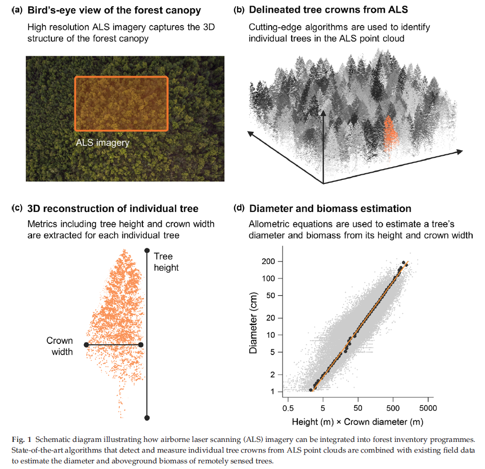
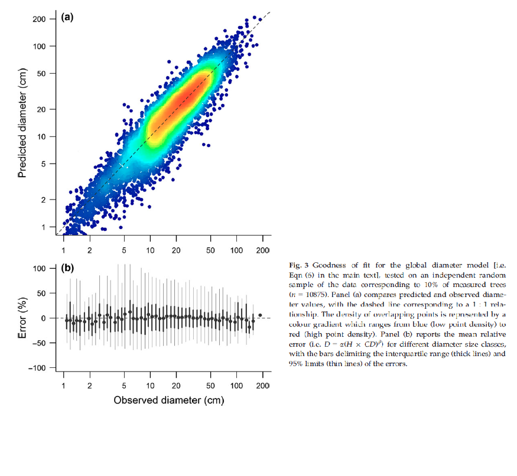

Modelamiento Lineal
Módulo 7
Biol. Irwing S. Saldaña
Diplomado en Estadística Aplicada
en Ciencias Biológicas y Ecológicas en R
Objetivos del módulo
- Comprender los fundamentos del modelamiento lineal, aplicaciones y limitaciones.
- Analizar el cumplimiento de los supuestos teóricos en modelos lineales.
- Interpretar de manera correcta los resultados numéricos de un modelo lineal.
- Aplicar procesos de selección de variables en modelos lineales múltiples.
- Desarrollar scripts de modelamiento lineal de manera efectiva con sintaxis de R.
Introducción
Temario del módulo
- Concepto de modelo lineal y función matemática.
- Aplicaciones y limitaciones.
- Supuestos teóricos del modelo lineal.
- Implementación de modelos lineales simples.
- Coeficiente de determinación.
- Estimación de parámetros: OLS vs Maximum Likelihood.
- Interpretación para variables explicativas numéricas y factores.
- Regresión lineal múltiple: interpretación.
- Concepto de interacción.
- Selección de variables: AIC.
- Regresiones polinómicas y transformaciones.
- Modelos Log.
- Posibilidades analíticas si no se cumplen los supuestos teóricos.
1. Modelos lineales
“La generalización de la realidad más utilizada. Pero ¿es la más adecuada?”
Modelo lineal simple
Es la forma más simple de modelar la realidad.
\[ y = \beta_0 + \beta_1 x_1 + \epsilon \]
Donde:
- \(y\) es la variable dependiente.
- \(x_1\) es la variable independiente.
- \(\beta_0\) es el coeficiente que representa el intercepto de la recta en \(y\).
- \(\beta_1\) es el coeficiente que representa la pendiente de la recta.
- \(\epsilon\) es el término de error, que captura la variabilidad no explicada por el modelo.
#| standalone: true
#| viewerHeight: 700
# Cargar las librerías necesarias
library(shiny)
library(ggplot2)
# Definir la interfaz de usuario
ui <- fluidPage(
titlePanel("Visualización Interactiva de un Modelo Lineal"),
sidebarLayout(
sidebarPanel(
sliderInput("beta1", "β₁ (Pendiente):", min = -5, max = 5, value = 1, step = 0.1),
sliderInput("beta0", "β₀ (Intercepto):", min = -10, max = 10, value = 0, step = 0.5),
actionButton("reset", "Restablecer Valores")
),
mainPanel(
plotOutput("linePlot"),
br(),
h4("Ecuación de la Recta:"),
uiOutput("equation")
)
)
)
# Definir la lógica del servidor
server <- function(input, output, session) {
# Generar datos sintéticos
set.seed(123) # Para reproducibilidad
x_data <- seq(1, 10, length.out = 100)
true_beta1 <- 2
true_beta0 <- 1
noise <- rnorm(100, mean = 0, sd = 2)
y_data <- true_beta1 * x_data + true_beta0 + noise
data <- data.frame(X = x_data, Y = y_data)
# Reactivo para restablecer los valores
observeEvent(input$reset, {
updateSliderInput(session, "beta1", value = 1)
updateSliderInput(session, "beta0", value = 0)
})
# Crear el gráfico
output$linePlot <- renderPlot({
ggplot(data, aes(x = X, y = Y)) +
geom_point(color = "blue") +
geom_abline(intercept = input$beta0, slope = input$beta1, color = "red", size = 1) +
labs(title = "Datos Sintéticos y Recta Ajustable",
x = "Variable Independiente (X)",
y = "Variable Dependiente (Y)") +
theme_minimal()
})
# Mostrar la ecuación de la recta con notación matemática
output$equation <- renderUI({
eq <- paste0("Y = ", input$beta0, " + ", input$beta1, " × X")
withMathJax(paste0("$$", eq, "$$"))
})
}
# Ejecutar la aplicación
shinyApp(ui = ui, server = server)
Modelo lineal múltiple
Implica tener más de una variable independiente. Cada una con su respectivo coeficiente \(\beta_i\):
\[ y = \beta_0 + \beta_1 x_1 + \beta_2 x_2 + \cdots + \beta_n x_n + \epsilon \]
Donde:
- \(y\) es la variable dependiente.
- \(x_1, x_2, \dots, x_n\) son las variables independientes.
- \(\beta_0\) es el intercepto de la curva.
- \(\beta_1, \beta_2, \dots, \beta_n\) son los coeficientes que representan la pendiente de cada variable.
- \(\epsilon\) es el término de error, que captura la variabilidad no explicada por el modelo.
En ecología, los modelos lineales ayudan a entender las relaciones entre mediciones de factores bioticos/abióticos (como temperatura, luz, radiación, o humedad, densidad poblacional, cobertura vegetal, densidad del depredador) y las respuestas biológicas de las especies.
Predecir la biomasa de una comunidad vegetal en función de la cobertura vegetal del suelo.
\[ \text{Biomasa} = \beta_0 + \beta_1\cdot\text{Cobertura Vegetal} \]
Se puede aproximar la riqueza de especies frente a la extensión del hábitat (basado en la teoría de la biogeografía de islas) con un modelo lineal log-transformado:
\[ \log_e{(\text{Riqueza})}= \beta_0 + \beta_1\cdot\log_e{(\text{Área})} \]
Analizar cómo la concentración de nutrientes (nitrógeno o fósforo) influye en la métrica de diversidad de especies de macroinvertebrados en un río:
\[ \log_e{(\text{Riqueza})}= \beta_0 + \beta_1\cdot\log_e{(\text{Área})} \]
Recuerda:
Sin datos nada es posible. Estos modelos permiten eso: crear un modelo a partir de los datos para entender la relación de las variables o para futuras predicciones.
Aplicaciones y limitaciones
Siempre que la respuesta biológica, o la parte de nuestro interés, sea lineal, puedes utilizarlo.
¿Es linear la relación entre la talla de los árboles y la biomasa?
Allometric equations for integrating remote sensing imagery into forest monitoring programmes


Above-ground biomass models for dominant trees species in cacao agroforestry systems in Talamanca, Costa Rica


Supuestos teóricos del modelo lineal
- Relación lineal: Las variables independientes y la variable de respuesta tienen una relación lineal.
- Normalidad: Los residuos se distribuyen normalmente. No es necesario que los predictores y el resultado estén distribuidos normalmente, siempre que los residuos lo estén. - Homocedasticidad: El término de error es el mismo para todos los valores de las variables independientes.
- No autocorrelación: Los residuos o términos de error son independientes entre sí.
- No multicolinealidad: Las variables independientes de un modelo de regresión no deben estar muy correlacionadas entre sí.
- No valores influyentes: Los datos no contienen valores atípicos que sean influyentes.
Posibilidades analíticas al fallar asunciones teóricas
| Asunción | Modelos Alternativos | Transformación de X | Transformación de Y |
|---|---|---|---|
| Relación Lineal | • Regresión Polinomial • Regresión con Splines • Modelos No Lineales (e.g., exponenciales, logarítmicos) • Modelos de Machine Learning (Árboles de decisión, Random Forest, Redes Neuronales) | • Logaritmo • Raíz cuadrada • Exponencial | • Logaritmo • Raíz cuadrada • Potencias (e.g., Box-Cox) |
| Normalidad de Residuos | • Modelos Lineales Generalizados (GLM) • Regresión Cuantílica (QR) • Modelos No Paramétricos (GAM) | • Logaritmo • Raíz cuadrada • Box-Cox | |
| Homocedasticidad | • Mínimos Cuadrados Ponderados (WLS) | • Opcional (e.g., transformación de X) | • Logaritmo • Raíz cuadrada |
| No Autocorrelación | • Modelos de Efectos Mixtos, Data Panel Regression (DPR) | • Diferenciación • Logaritmo | |
| No Multicolinealidad | • Regresión Ridge • Regresión Lasso • Regresión Elastic Net • Análisis de Componentes Principales (PCA) para obtener componentes principales | • PCA • Combinación de variables | |
| No Valores Influyentes | • Regresión Robusta • Modelos No Paramétricos (GAM) |
Aplicación en R: Corregir Fallas en Relación Lineal
Aplicación en R: Corregir Fallas en Normalidad de Residuos
# Modelo GLM con distribución normal (similar a lm)
modelo_glm_normal <- glm(Y ~ X, data = datos, family = gaussian())
# Modelo GLM con distribución Gamma (si los datos son positivos y asimétricos)
modelo_glm_gamma <- glm(Y ~ X, data = datos, family = Gamma(link = "log"))
# Regresión cuantílica para el cuantil 0.5 (mediana)
library(quantreg)
modelo_qr <- rq(Y ~ X, data = datos, tau = 0.5)
# Modelo GAM con término suave para X
library(mgcv)
modelo_gam <- gam(Y ~ s(X), data = datos)Aplicación en R: Corregir Fallas en Homocedasticidad (WLS)
# Ajustar un modelo OLS inicial
modelo_ols <- lm(Y ~ X, data = datos)
# Obtener residuos y analizar la varianza
datos <- datos %>%
mutate(resid = resid(modelo_ols))
# Ajustar un modelo para la varianza utilizando GAM
modelo_gam_var <- gam(resid^2 ~ s(X), data = datos, family = gaussian())
# Predicciones de la varianza
datos <- datos %>%
mutate(var_pred = predict(modelo_gam_var,
newdata = datos),
peso = 1 / var_pred)Aplicación en R: Corregir Autocorrelación
Aplicación en R: Corregir Multicolinearidad
Aplicación en R: Corregir Valores Influyentes
¿Cómo se estiman los parámetros?: Optimización
Mínimos Cuadrados Ordinarios (OLS): Es el método más utilizado en Reg. Lineal. OLS busca minimizar la suma de los cuadrados de las diferencias (residuos) entre los valores observados y los valores predichos por el modelo.
Máxima Verosimilitud (MLE): Este método se basa en maximizar la función de verosimilitud, que representa la probabilidad de observar los datos dados los parámetros del modelo.
Resultados de los modelos 1:
Call:
lm(formula = Petal.Length ~ Sepal.Length + Species, data = iris)
Residuals:
Min 1Q Median 3Q Max
-0.76390 -0.17875 0.00716 0.17461 0.79954
Coefficients:
Estimate Std. Error t value Pr(>|t|)
(Intercept) -1.70234 0.23013 -7.397 1.01e-11 ***
Sepal.Length 0.63211 0.04527 13.962 < 2e-16 ***
Speciesversicolor 2.21014 0.07047 31.362 < 2e-16 ***
Speciesvirginica 3.09000 0.09123 33.870 < 2e-16 ***
---
Signif. codes: 0 '***' 0.001 '**' 0.01 '*' 0.05 '.' 0.1 ' ' 1
Residual standard error: 0.2826 on 146 degrees of freedom
Multiple R-squared: 0.9749, Adjusted R-squared: 0.9744
F-statistic: 1890 on 3 and 146 DF, p-value: < 2.2e-16- Residuals:
- Coefficients: Pendiente \(\beta\) de cada variable y el intercepto \(\alpha\) de la recta.
- \(p_{value}\) de los coeficientes: para evaluar la \(H_0\) “no existe efecto de la variable \(X\)”. \(p_{value} < 0.05\), variable significativa, se rechaza \(H_0\), hay efecto.
Resultados de los modelos 2:
Call:
lm(formula = Petal.Length ~ Sepal.Length + Species, data = iris)
Residuals:
Min 1Q Median 3Q Max
-0.76390 -0.17875 0.00716 0.17461 0.79954
Coefficients:
Estimate Std. Error t value Pr(>|t|)
(Intercept) -1.70234 0.23013 -7.397 1.01e-11 ***
Sepal.Length 0.63211 0.04527 13.962 < 2e-16 ***
Speciesversicolor 2.21014 0.07047 31.362 < 2e-16 ***
Speciesvirginica 3.09000 0.09123 33.870 < 2e-16 ***
---
Signif. codes: 0 '***' 0.001 '**' 0.01 '*' 0.05 '.' 0.1 ' ' 1
Residual standard error: 0.2826 on 146 degrees of freedom
Multiple R-squared: 0.9749, Adjusted R-squared: 0.9744
F-statistic: 1890 on 3 and 146 DF, p-value: < 2.2e-16- \(RSE\) o Error estándar residual:
- \(R^2\) o coeficiente de determinación: proporción de la varianza de \(Y\) explicada por las variables \(X\). Usar el penalizado \(Adj. R^2\).
- \(p_{value}\) del modelo: para evaluar la \(H_0\) “el modelo no explica la variable \(Y\)”. \(p_{value} < 0.05\), modelo significativo.
Modelo con interacciones
En modelos de regresión, un término de interacción captura el efecto combinado de dos o más variables independientes sobre la variable dependiente. Es decir, el efecto de una variable independiente \(X\) sobre \(Y\) depende del valor de otra variable independiente.
¿Cuando Incorporar Interacciones?
Dependencia de Efectos: Si se sospecha que el efecto de una variable sobre la respuesta varía según otra variable.
Complejidad de Relaciones: Para modelar relaciones más complejas que no pueden ser capturadas por términos aditivos simples.
\[ y = \beta_0 + \beta_1 x_1 + \beta_2 x_2 + \beta_3 (x_1\cdot x_2) + \epsilon \] Aquí \(\beta_3\) representa la interacción de \(X_1\) y \(X_2\).
Regresión lineal múltiple: X numéricas
Call:
lm(formula = Petal.Length ~ Sepal.Length + Sepal.Width, data = iris)
Residuals:
Min 1Q Median 3Q Max
-1.25582 -0.46922 -0.05741 0.45530 1.75599
Coefficients:
Estimate Std. Error t value Pr(>|t|)
(Intercept) -2.52476 0.56344 -4.481 1.48e-05 ***
Sepal.Length 1.77559 0.06441 27.569 < 2e-16 ***
Sepal.Width -1.33862 0.12236 -10.940 < 2e-16 ***
---
Signif. codes: 0 '***' 0.001 '**' 0.01 '*' 0.05 '.' 0.1 ' ' 1
Residual standard error: 0.6465 on 147 degrees of freedom
Multiple R-squared: 0.8677, Adjusted R-squared: 0.8659
F-statistic: 482 on 2 and 147 DF, p-value: < 2.2e-16- Por cada unidad de aumento de \(X\), \(Y\) aumenta en \(\beta_i\) unidades
Regresión lineal múltiple: X factores
Call:
lm(formula = Petal.Length ~ Sepal.Length + Species, data = iris)
Residuals:
Min 1Q Median 3Q Max
-0.76390 -0.17875 0.00716 0.17461 0.79954
Coefficients:
Estimate Std. Error t value Pr(>|t|)
(Intercept) -1.70234 0.23013 -7.397 1.01e-11 ***
Sepal.Length 0.63211 0.04527 13.962 < 2e-16 ***
Speciesversicolor 2.21014 0.07047 31.362 < 2e-16 ***
Speciesvirginica 3.09000 0.09123 33.870 < 2e-16 ***
---
Signif. codes: 0 '***' 0.001 '**' 0.01 '*' 0.05 '.' 0.1 ' ' 1
Residual standard error: 0.2826 on 146 degrees of freedom
Multiple R-squared: 0.9749, Adjusted R-squared: 0.9744
F-statistic: 1890 on 3 and 146 DF, p-value: < 2.2e-16- Por el efecto de la categoría 2 de \(X\) genera un aumento/disminución en \(Y\) en \(\beta_i\) unidades, respecto a la categoría 1 (nivel base, nivel de contraste, placebo). unidades
Interpretación de interacciones
- \(\beta_1\) es el efecto de \(X_1\) en \(Y\) cuando \(X_2 = 0\).
- \(\beta_2\) es el efecto de \(X_2\) en \(Y\) cuando \(X_1 = 0\).
- \(\beta_3\) es el cambio en el efecto de \(X_1\) sobre \(Y\) por cada unidad adicional de \(X_2\) y viceversa.
Call:
lm(formula = Petal.Length ~ Sepal.Length * Sepal.Width, data = iris)
Residuals:
Min 1Q Median 3Q Max
-1.58510 -0.41994 -0.06607 0.43235 1.66736
Coefficients:
Estimate Std. Error t value Pr(>|t|)
(Intercept) 6.3910 3.0378 2.104 0.03711 *
Sepal.Length 0.2042 0.5303 0.385 0.70079
Sepal.Width -4.1994 0.9660 -4.347 2.57e-05 ***
Sepal.Length:Sepal.Width 0.5057 0.1695 2.984 0.00334 **
---
Signif. codes: 0 '***' 0.001 '**' 0.01 '*' 0.05 '.' 0.1 ' ' 1
Residual standard error: 0.6298 on 146 degrees of freedom
Multiple R-squared: 0.8753, Adjusted R-squared: 0.8727
F-statistic: 341.6 on 3 and 146 DF, p-value: < 2.2e-16Métricas de evaluación y comparación de modelos
| Métrica | Descripción | Ventajas | Limitaciones |
|---|---|---|---|
| RSE (Residual Standard Error) | Raíz de la suma de residuos al cuadrado dividida por los grados de libertad. | Ajusta el error por la complejidad del modelo. | No es tan intuitivo fuera del contexto de regresión. |
| RMSE (Root Mean Squared Error) | Raíz cuadrada del promedio de los residuos al cuadrado. | Intuitivo y ampliamente usado. | Sensible a outliers. |
| R-cuadrado (R²) | Proporción de la variabilidad en Y explicada por los predictores. | Fácil de interpretar. | No penaliza la complejidad del modelo. |
| R-cuadrado Ajustado (R²_adj) | R² ajustado por el número de predictores, penalizando la inclusión de variables irrelevantes. | Mejora la comparabilidad entre modelos con diferente complejidad. | Menos intuitivo que R². |
| MAE (Mean Absolute Error) | Promedio de las diferencias absolutas entre observados y predichos. | Robusto ante outliers. | No penaliza errores grandes de manera diferenciada. |
| MSE (Mean Squared Error) | Promedio de los residuos al cuadrado. | Utilizado en muchos métodos de optimización. | Sensible a outliers. |
| AIC (Akaike Information Criterion) | Métrica basada en la verosimilitud penalizada por la complejidad del modelo. | Útil para comparar modelos no anidados. | Puede favorecer modelos más simples de forma excesiva. |
| BIC (Bayesian Information Criterion) | Similar a AIC pero con penalización más fuerte para la complejidad. | Preferido cuando se busca un balance más estricto entre ajuste y simplicidad. | Puede ser demasiado restrictivo con muchos predictores. |
| MAPE (Mean Absolute Percentage Error) | Promedio de los errores absolutos expresados como porcentaje de Y. | Intuitivo en términos relativos. | No definido cuando Y = 0 o cerca de cero. |
Modelos logarítmicos
- Lineal-lineal (no logarítmico): regresión clásica
\[ y = \beta_0 + \beta_1 x_1 + \epsilon \]
- Lineal-log: X logaritmizada
\[ y = \beta_0 + \beta_1 \log(x_1) + \epsilon \]
- Log-lineal: Y logaritmizada
\[ \log(Y) = \beta_0 + \beta_1 x_1 + \epsilon \]
- Log-Log: X e Y logaritmizada
\[ \log(Y) = \beta_0 + \beta_1 \log(x_1) + \epsilon \]
Interpretaciones de resultados en modelos logarítmicos
| Modelo | Ecuación | Interpretación_β1 |
|---|---|---|
| Lineal Clásico | Y = β0 + β1X + ϵ | Por cada unidad de aumento en X, se espera que Y aumente en β1 unidades. |
| Log-Linear | log(Y) = β0 + β1X + ϵ | Por cada unidad de aumento en X, se espera que Y aumente por un factor F = exp(β1). Si F>1, entonces aumenta en F-1 x 100. Si F<1, entonces disminuye en 1-F x 100. |
| Lineal-Log | Y = β0 + β1 log(X) + ϵ | Por cada aumento porcentual en X (digamos POR = 0.01), se espera que Y aumente en β1 x POR, o β1 x 0.01 unidades. |
| Log-Log | log(Y) = β0 + β1 log(X) + ϵ | Por cada cambio porcentual en X (digamos POR% = 1%), se espera que Y cambie aproximadamente en β1xPOR%. |